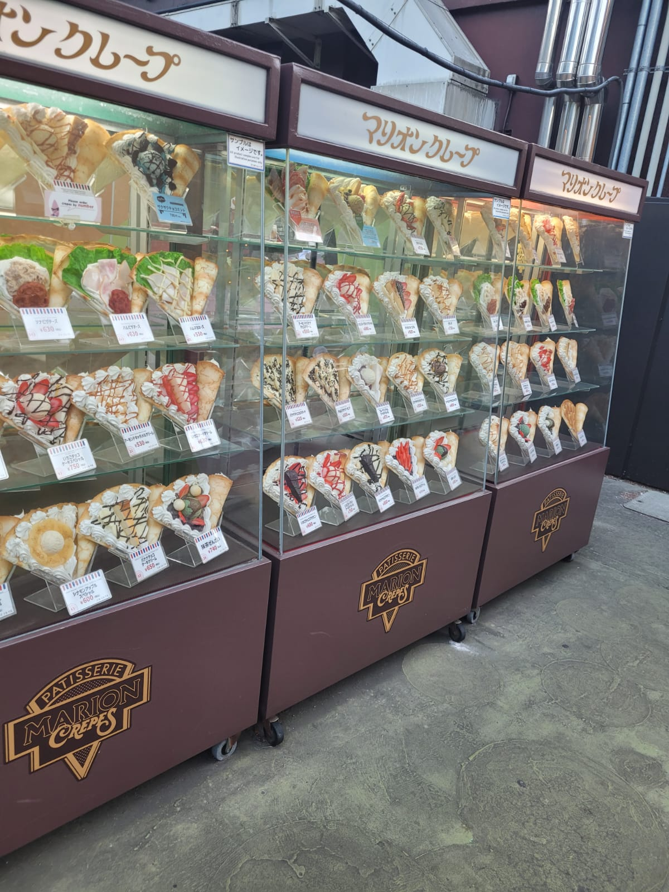
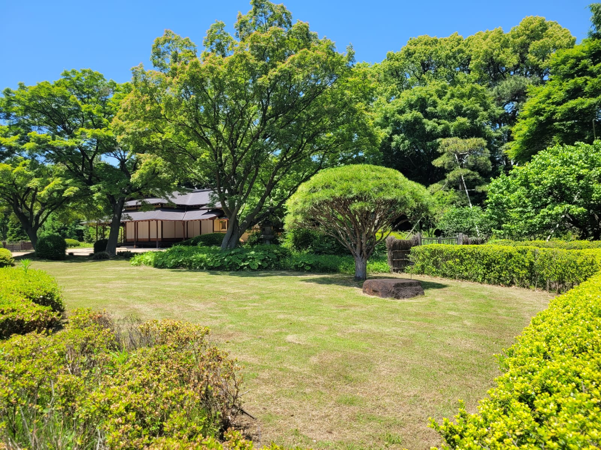
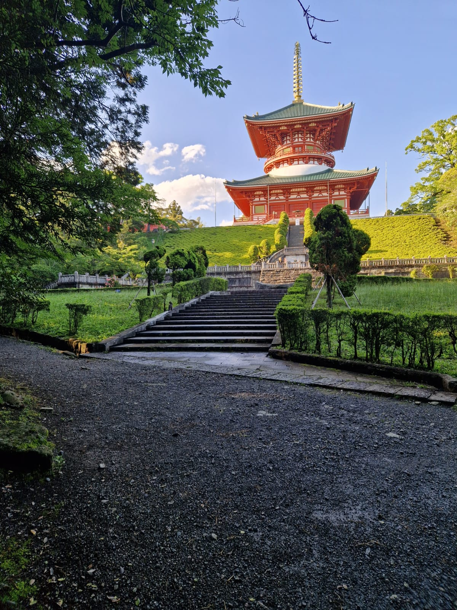

Japani on kiehtova yhdistelmä perinteitä ja futurismia - samana päivänä voit ihastella kirsikankukkia zen-puutarhassa ja sukeltaa vilkkaan metropolin valomereen. Jokainen kaupunki ja alue tarjoaa oman ainutlaatuisen tunnelmansa, oli kyseessä sitten Kioton temppelit, Tokion trendikkäät kaupunginosat tai Hokkaidon lumiset maisemat. Erinomaisen ruoan, ystävällisten ihmisten ja monipuolisten nähtävyyksien ansiosta Japani ei ole vain matkakohde - se on elämys, joka tempaa mukaansa ja jättää lähtemättömän vaikutuksen.
Tokio
Tokio on futuristinen metropoli, joka tarjoaa ostosmahdollisuuksia, viihdettä ja huipputeknologiaa. Kaupunki sykkii nopeaa tahtia, mutta se tarjoaa myös rauhallisia paikkoja, kuten temppeleitä ja puutarhoja. Tokio on täynnä kontrasteja - vilkkaat neonvalot ja perinteiset puistot elävät sulassa sovussa.

Osaka
Osaka on ruokaparatiisi, joka tunnetaan eloisasta ilmapiiristään ja herkullisesta street foodista. Täällä voit nauttia klassisista ruokalajeista, kuten takoyakista ja okonomiyakista, samalla kun tutustut kaupungin vilkkaaseen yöelämään ja moderniin arkkitehtuuriin. Osakan energinen tunnelma ja makuelämykset tekevät siitä ainutlaatuisen matkakohteen.
Kioto
Kioto on perinteisen Japanin sydän, jossa voi vierailla historiallisissa temppeleissä ja kokea geishakulttuurin. Tämä entinen keisarillinen pääkaupunki on täynnä kulttuurihistoriallisia kohteita, kuten Kinkaku-ji ja Fushimi Inari-taisha. Kioto on rauhallinen ja tunnelmallinen, ja se vie matkailijat suoraan Japanin perinteisiin.
Narita
Narita on tunnettu kansainvälisestä lentokentästään, mutta se tarjoaa myös perinteistä japanilaista kulttuuria ja nähtävyyksiä. Naritasan Shinshoji -temppeli on kaupungin keskipiste, ja sen upea arkkitehtuuri sekä rauhallinen puutarha houkuttelevat vierailijoita. Naritan omaleimainen Omotesando-katu on täynnä perinteisiä kauppoja ja ravintoloita, joissa voi maistaa paikallisia herkkuja, kuten unagia eli grillattua ankeriasta. Tämä historiallinen kaupunki on täydellinen pysähdyspaikka ennen tai jälkeen lennon.
